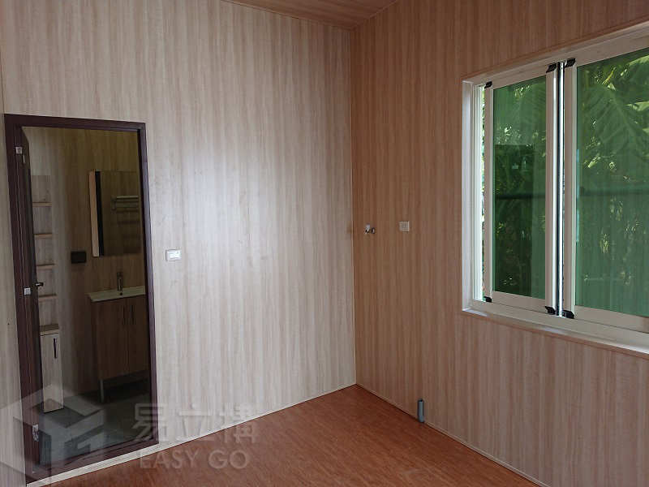

2005 初次邂逅
創辦人起初於大型船運公司擔任國貿人員，在工作中偶然發現貨櫃做為運輸以外的空間用途所帶來的經濟及便利性，自此深入研究住用貨櫃相關業務。
從貨櫃空間的探索，到全新鋼構模組的開發，易立構持續把居住的想像往前推進。

2012 年，易立構捨棄貨櫃本體，以全新鋼材打造結構；2015 年進一步將輕質混凝土融入屋體。
結合設計、鐵工、木作、水電、泥作與運輸，從工廠到現場，整合空間需要的各個環節。
創辦人起初於大型船運公司擔任國貿人員，在工作中偶然發現貨櫃做為運輸以外的空間用途所帶來的經濟及便利性，自此深入研究住用貨櫃相關業務。
創辦人利用船公司自有貨櫃資源及位於高雄港的地理優勢，於公司內成立直銷單位，改變既往模式，使貨櫃不必經由中間商便可直接到達消費者手中。
單純買賣已無法完全滿足使用者需求，且同行代加工能力不足。 便設廠籌措六大工班 (設計、鐵工、木作、水電、泥作、運輸)，自行發落加工事宜。
傳統貨櫃屋受限於本質，悶熱且外觀不佳。 便設計將貨櫃做為結構本體，以全新發泡鋼板自外緣覆蓋之，使其具有全新外觀及隔熱效能。 因仿照冷凍貨櫃的斷熱結構，故取名「仿冷櫃」，並申請新型專利「M408598號」。 此舉在三十年不變的貨櫃屋業界投下一顆震撼彈！
仿冷櫃雖持續暢銷，隔熱效能與外觀較傳統貨櫃屋已有解決方案，但仍嫌不足，原因出自於結構依然為貨櫃本體所侷限，許多利於居住條件的改造因而滯礙難行。故捨棄貨櫃本體，再次開發以全新鋼材打造全新結構。 因具有「易於立即建構」之優勢，故取名「易立構」，英文直譯「Easy Go」，並取得新型專利字號「M431918」號。
耗資百萬，研究特殊配比，將永久性材料「輕質混凝土」融入結構之中，取代會隨時間消耗的木質地板及鐵皮頂板，同時並可取得良好隔音隔熱效能。 以此申請新型專利「M552518」號。 是全台灣唯一將輕質混凝土成功應用在移動式屋體結構的廠商。
通過結構計算及防火規範，可申請建使照、辦理保存登記，躋身正式合法營造之列。
廣邀營造業、建築師、設計師參與生產製程。擴大規模，永遠做第一線開發！